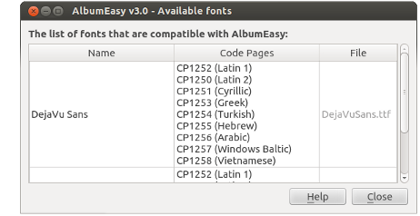

| ---------- Standard Fonts ---------- |
AlbumEasy provides a number of built-in fonts that may be selected for generating text.
The built-in fonts are comprised of the characters in the Latin 1 character
set which should be sufficient for displaying text in most Western European languages.
Each built-in font is assigned a unique 2 character identifier which is used to associate the font with a text item:
| Identifier | Name | |
| CN | - | Courier Normal |
| CB | - | Courier Bold |
| CI | - | Courier Italic |
| CS | - | Courier Bold-Italic |
| TN | - | Times Roman Normal |
| TB | - | Times Roman Bold |
| TI | - | Times Roman Italic |
| TS | - | Times Roman Bold-Italic |
| HN | - | Helvetica Normal |
| HB | - | Helvetica Bold |
| HI | - | Helvetica Italic |
| HS | - | Helvetica Bold-Italic |
For example to output text in a 12 point Times Roman Normal font the TN identifier would be used:
PAGE_TEXT (TN 12 "Some text")
| ---------- Custom Fonts ---------- |
In addition to the built in fonts AlbumEasy is also able to display text using many of the fonts installed on a user's system. To make use of a font it is necessary to include it via the ALBUM_DEFINE_FONT command. This command requires the font name and optionally the desired Code Page (character set).
Selecting the Font button on the AlbumEasy tool-bar will display the Available Fonts Dialogue Box.

This dialogue box lists the fonts that are compatible with AlbumEasy:
By default AlbumEasy only searches the local fonts folder within the AlbumEasy folder for fonts, so if only a few fonts are in regular use these should be copied to this folder. Alternatively AlbumEasy may be configured via the configuration dialogue box to search a user's computer for all fonts, which can however take much more time.
Not all fonts are compatible with AlbumEasy, so if you are wondering why your favourite font is not listed, then it is probably because it is not compatible. Selecting the Display the list of incompatible fonts check-box in the configuration dialogue box will display a list of fonts that have been found but are incompatible with AlbumEasy.